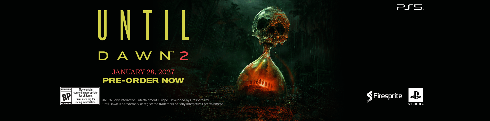
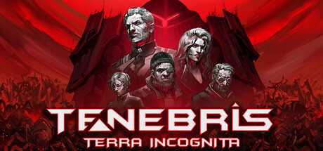

🔥🔥🔥
漫威金刚狼（Marvel's Wolverine）
Insomniac × Marvel × SIE《漫威金刚狼》PS5 / PS5 Pro 独占正式发售；亚洲本地午夜起解锁，截稿时港区店页已开评（约 1.2K）。
- 日期
- 2026-09-15
- 库
- 游戏行业 · 发售
- 状态
- 正式发售 · PS5 独占
今日主线是 漫威金刚狼（Marvel's Wolverine） PS5 / PS5 Pro 独占正式发售；展会侧 tinyBuild Connect 2026 已播，片单含世界首发《巨蟹横行》《Road to Jukai》及多作新锁。独立轴 Tenebris: Terra Incognita EA→1.0 翻牌 live，另有《人偶之影：琵幽璃塔的故事》公布与 Putty World Switch 2。行业另记 Game Freak《雨のちハレ女》。今日无新旗舰；今日无新 MCP/Skill 推荐。AI 空库未出 Tab · 二次元空库未出 Tab · 游戏开发空库未出 Tab。
判定：AAA 发售 + 展会片单扛主线；独立轴多翻牌/公布。不复述 BlizzCon / SideM / Melty / holoVillage / 原神 7.1。不发涉政。
最高 Attention 落在漫威金刚狼正式发售；其后为 tinyBuild Connect 片单、Tenebris 1.0 翻牌与独立世界首发/公布。AI / 二次元 / 游戏开发空库未出 Tab；今日无新旗舰、无新 MCP/Skill 推荐。
判定：先推行业库；旗舰轴写清「无」即可。AI 空库未出 Tab · 二次元空库未出 Tab · 游戏开发空库未出 Tab。
Insomniac × Marvel × SIE《漫威金刚狼》PS5 / PS5 Pro 独占正式发售；亚洲本地午夜起解锁，截稿时港区店页已开评（约 1.2K）。
tinyBuild Connect 已于 2026-09-14（约 23:00 CST 档）播出：16 作预告/更新；世界首发《巨蟹横行》《Road to Jukai》；新锁定档《命悬一舰》11/4、《深空当铺：可能是偷的》10/28、…
昨日报待核项落地：Steam 店页已翻牌——《Tenebris: Terra Incognita》于 2026-09-14 离开抢先体验，1.0 正式上线（coming_soon=false；无 Early Access 标记）。
tinyBuild Connect 世界首发：《巨蟹横行》——《王之凝视》团队 Hypnohead 新作，巨型甲壳上的 roguelite 城建 + 自动战斗；Steam 简中店名已挂，档期 2027。
tinyBuild Connect 公布发行《Road to Jukai》（原 Silent Road）：日本夜班出租车心理恐怖，2027；Steam playtest 已开。店名仍英文。
魔女之泉团队 Kiwi Walks 公布 3D 动作 RPG 新作《人偶之影：琵幽璃塔的故事》；Steam 简中店名已挂，主机 + PC，2027。
Game Freak 公布完全新作手机游戏《雨のちハレ女》：与现实日本天气连动的「洗衣」日常 F2P；大森滋任导演/制作人，今冬日本 iOS/Android；简中官方译名未见，留日文原题。
行业主线：漫威金刚狼正式发售 + tinyBuild Connect 展会片单；独立轴 5 条（含 Tenebris 1.0 翻牌与两作世界首发）。今日有独立游戏观察新增；展会片单已出。
判定：片单与发售双主线；BlizzCon / Melty / holoVillage / SideM 不复述。TGS / Capcom 未播不预写。
Insomniac × Marvel × SIE《漫威金刚狼》PS5 / PS5 Pro 独占正式发售；亚洲本地午夜起解锁，截稿时港区店页已开评（约 1.2K）。

关注度 · 🔥🔥🔥。来源：PlayStation.Blog · PS Store 港区 · PlayStation。
Game Freak 公布完全新作手机游戏《雨のちハレ女》：与现实日本天气连动的「洗衣」日常 F2P；大森滋任导演/制作人，今冬日本 iOS/Android；简中官方译名未见，留日文原题。
tinyBuild Connect 已于 2026-09-14（约 23:00 CST 档）播出：16 作预告/更新；世界首发《巨蟹横行》《Road to Jukai》；新锁定档《命悬一舰》11/4、《深空当铺：可能是偷的》10/28、《守墓人2》9/22。
| 作品 | 类型 | 档期 / 平台 | 备注 |
|---|---|---|---|
| 巨蟹横行（The Crab is Walking） | 世界首发 | 2027 · PC (Steam) | Steam 简中店名；Hypnohead / tinyBuild |
| Road to Jukai | 世界首发 / 发行公布 | 2027 · PC (Steam) | 原 Silent Road；playtest 已开；无官方简中店名 |
| 命悬一舰（Hull Rupture） | 新锁 | 2026-11-04 · PC (Steam) | Steam 简中「命悬一舰」；更新试玩可玩 |
| 深空当铺：可能是偷的（Probably Stolen） | 新锁 | 2026-10-28 · PC (Steam) | Steam 简中店名；新试玩 |
| 守墓人2（Graveyard Keeper 2） | 新锁 | 2026-09-22 · PC / PS5 / Switch 2 / Xbox Series | Steam 简中「守墓人2」；全平台新试玩，进度可继承 |
| 蛮荒计划（FEROCIOUS） | 新锁 | 2026-09-14 · PS5 / Xbox Series（PC 已有） | 主机同日发售；Steam 简中「蛮荒计划 (FEROCIOUS)」 |
| 作品 | 备注 |
|---|---|
| Kingmakers | 10 分钟实机深潜；Steam EA「即将」+ playtest 报名；无硬日期 |
| 升降梯外: 超自然修理工模拟器（The Lift） | 剧情预告；2027；Steam/PS5/Xbox |
| 焕家物语（Hozy） | 主机（PS5/Switch/Xbox）「今年内」；Steam Hideaways DLC 已上 |
| 灰雨钢锋（Of Ash and Steel） | 主机「soon」；DLC Shattered Faith 开发中 |
| Trainfort | 新 playtest 可报名；档期 TBA |
| 钻核公司（Drill Core） | 周年更新已上（PC，主机跟进） |
| SAND: Raiders of Sophie | 口碑预告 + 本月重大更新；Steam 英文店名 |
| Happy's Humble Burger Cult | Trial by Fryer PvP + 两家新餐厅已上；无简中店名 |
| 维修物语（ReStory） | 50 万套纪念；9/21 免费更新（新设备/顾客） |
| 王之凝视（The King is Watching） | Steam Deck 优化已上 |
关注度 · 🔥🔥。来源：Games Press · Gamer Social Club · Steam Deck HQ。
昨日报待核项落地：Steam 店页已翻牌——《Tenebris: Terra Incognita》于 2026-09-14 离开抢先体验，1.0 正式上线（coming_soon=false；无 Early Access 标记）。

关注度 · 🔥🔥。来源：Steam · Steam News。
tinyBuild Connect 世界首发：《巨蟹横行》——《王之凝视》团队 Hypnohead 新作，巨型甲壳上的 roguelite 城建 + 自动战斗；Steam 简中店名已挂，档期 2027。

关注度 · 🔥🔥。来源：Games Press · Steam · Gamer Social Club。
tinyBuild Connect 公布发行《Road to Jukai》（原 Silent Road）：日本夜班出租车心理恐怖，2027；Steam playtest 已开。店名仍英文。
关注度 · 🔥🔥。来源：Games Press · Steam · Gamer Social Club。
魔女之泉团队 Kiwi Walks 公布 3D 动作 RPG 新作《人偶之影：琵幽璃塔的故事》；Steam 简中店名已挂，主机 + PC，2027。
System 3 公布经典 Putty 系列重想象新作《Putty World》登陆 Switch 2，定档 2027 Q2；TGS 可试早期技术演示。无官方简中译名，留英文。
关注度 · 🔥。来源：Gematsu。